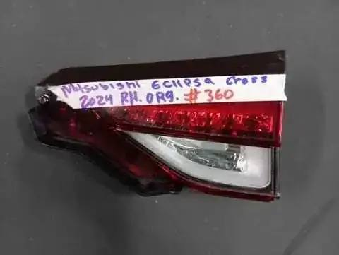

Piezas de carrocería para Mitsubishi Eclipse Cross
8 piezas disponibles hoy para Mitsubishi Eclipse Cross, cada una con su foto y su código: faros y lámparas delanteras (4), lámparas traseras (2), parrillas (1), refuerzos delanteros (1). Dinos el año de tu carro y te confirmamos si le sirve.
- Garantía de 3 días
- Foto real de cada pieza
- Efectivo, Yappy o ACH
- Lunes a sábado, 8:00 a. m. a 5:00 p. m.
Faros y lámparas delanteras para Mitsubishi Eclipse Cross 4
 097Eclipse Cross2018-20 · lado izquierdo · original
097Eclipse Cross2018-20 · lado izquierdo · original 098Eclipse Cross2022-25 · lado derecho · original
098Eclipse Cross2022-25 · lado derecho · original 120Eclipse Cross2025 · lado izquierdo · original
120Eclipse Cross2025 · lado izquierdo · original LD060Eclipse Cross2022-26 · lado derecho
LD060Eclipse Cross2022-26 · lado derechoLámparas traseras para Mitsubishi Eclipse Cross 2

360Eclipse Cross2024 · lado derecho · original 361Eclipse Cross2024 · lado derecho · original
361Eclipse Cross2024 · lado derecho · original 685Eclipse Cross
685Eclipse Cross R025Lancer / Eclipse Cross
R025Lancer / Eclipse Cross